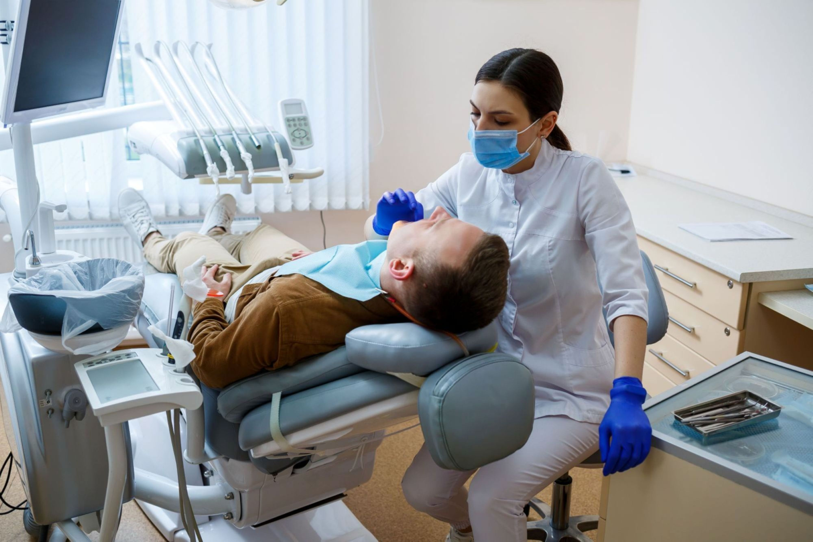
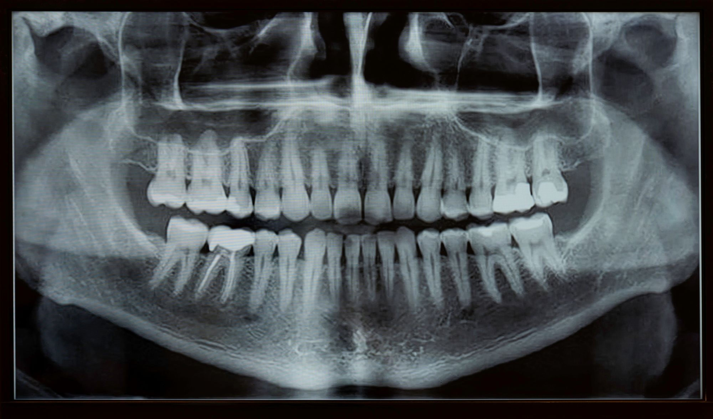
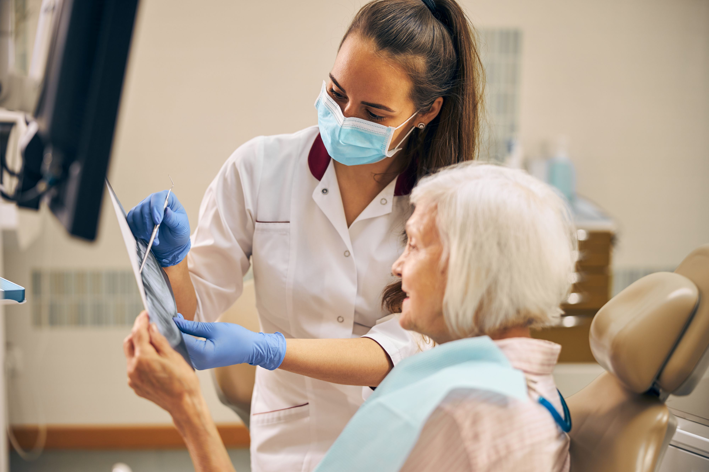
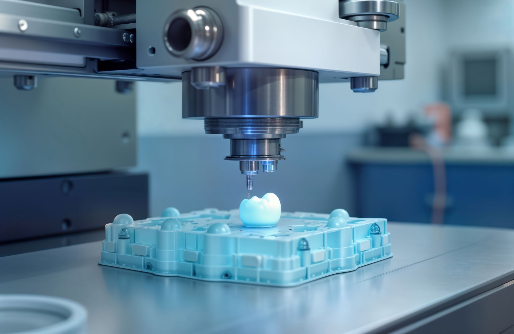

At 100SMILES Dental Care, we offer a wide range of dental services tailored to meet the needs of families and older adults. Our goal is to keep your smile healthy, confident, and cared for at every stage of life.
Annual Dental Check-Up Package
Physical Examination
A thorough examination of your overall dental health, including checking for any signs of illness, abnormalities, or discomfort.
Cleanings

Ensuring that your teeth are clean and free from plaque and tartar.
X-Rays
Assessment and preventive measures against common dental issues.
Dental Check-Up
Evaluation of your dental health, including checking for signs of dental disease and providing advice on dental care.
Nutritional Guidance
Discussion about your diet, nutritional needs, and recommendations for maintaining a healthy smile.
Blood Tests or Laboratory Work
Additional tests may be recommended based on your age, dental history, or specific health concerns.
Educational Articles
We believe that informed patients make empowered decisions. Explore our articles to learn more about dental health, treatment options, and everyday care tips.
SPECIAL OFFERS!
Book online today and enjoy 25% off your next visit. Free dental checkup on Saturday, 5th July at 9am.
Ready to Smile?
Our team is here to help you achieve the healthy, confident smile you deserve.
Book Your Appointment